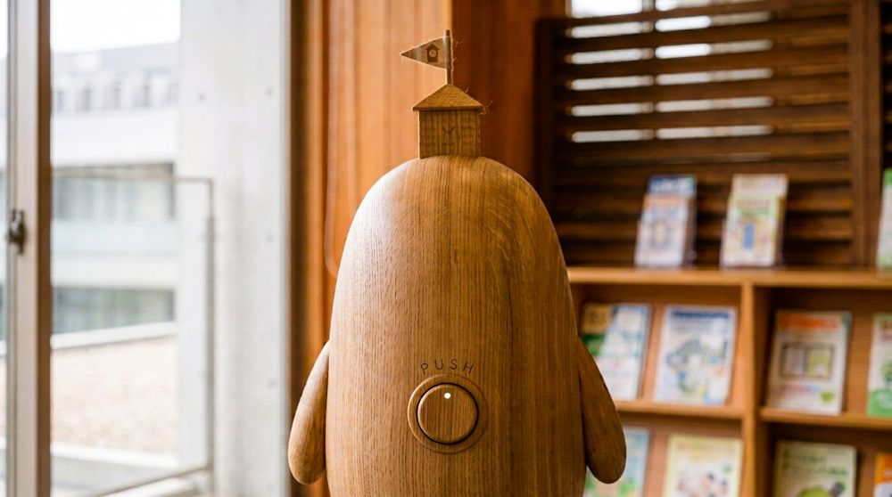

困りごと相談室は、生活共生課が設けている相談室です。窓口越しに向かい合うのではなく、同じ空間で話すことを大切にした畳敷きの部屋です。角の丸い机を囲んで座るため、職員と相談者をデスクで隔てません。「相談できない人のための場所」ではなく、「相談したくなる場所」を目指しています。
相談室について
- 畳敷きの部屋で、角の丸い机を囲んで話します
- 一般的な役所のようなカウンター形式ではありません
- 家庭的で安心できる空間づくりを心がけています
プレイコーナー
相談室内にはプレイコーナーを設けています。お子さまがおもちゃで遊んでいる間、 保護者の方は安心してご相談いただけます。待ち時間も、居場所としてご利用いただけます。
相談支援用ピコぬくん

困りごと相談室には、相談支援用のピコぬくんが常駐しています。背中には「相談ボタン」が付いています。このボタンは、自分から「助けて」と言葉にすることが難しい方のためのものです。ボタンを押すと、ピコぬくんが自然な流れで職員へおつなぎします。
急かさない、評価しない、説教しない。「困ってから来る場所」ではなく、「少し疲れたから寄る場所」として、どなたでも安心してお立ち寄りいただけます。
相談方法
| 来所相談 | 市役所3階 生活共生課 困りごと相談室(予約制) |
|---|---|
| 電話相談 | ぬぬ-ぬかピコ-4848(しあわせ) 平日8:30〜16:00 |
| 費用 | 無料 |
ご相談内容は、法令等に基づく場合を除き、ご本人の同意なく他部署へ共有することはありません。安心してご相談ください。